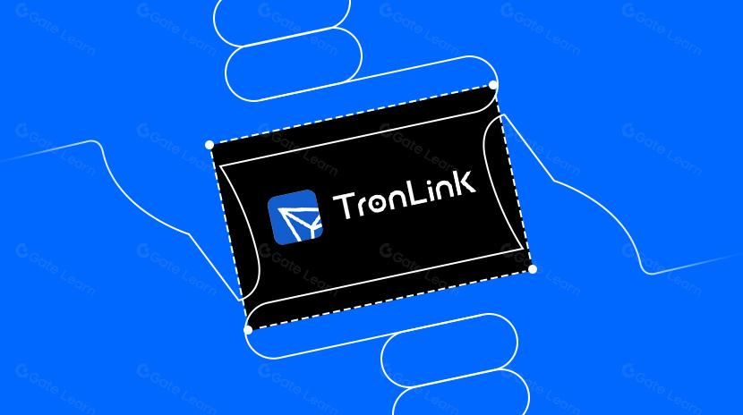

Offline Website Software
TronLink extension is the official, primary decentralized cryptocurrency wallet tailored specifically for the TRON blockchain ecosystem. Functioning as a secure browser extension—compatible with Google Chrome, Microsoft Edge, and Brave—TronLink acts as a bridge between your desktop web browser and the TRON network.
Unlike centralized cryptocurrency exchanges where a company controls your funds, TronLink is a non-custodial wallet. This means you have absolute ownership over your private keys and cryptographic seed phrases. TronLink does not store your password or funds on a central server; instead, it encrypts this data locally on your device.
TronLink serves three primary purposes:
1. Asset Vault: A secure interface to store, send, swap, and receive Tronix (TRX), stablecoins like Tether (USDT) and USD Coin (USDC), and all TRC-10 and TRC-20 tokens.
2. Network Control Panel: A portal to manage TRON’s native resource system, allowing you to stake tokens, view Bandwidth and Energy, and vote for network validators.
3. DApp Gateway: An interface that allows your browser to interact safely with decentralized applications (DApps), decentralized finance (DeFi) protocols, and non-fungible token (NFT) marketplaces without exposing your private keys.
Key Features of TronLink
* Multi-Account Management: Create, import, and switch between multiple wallet addresses within a single extension interface.
* Hardware Wallet Integration: Connects directly with Ledger hardware wallets, enabling cold-storage level security for large token balances.
* Resource Visualization: Features live, real-time dashboard tracking for available Bandwidth, Energy, and voting power.
* In-Wallet Token Swapping: Built-in decentralized exchange routing allows users to trade TRON-based tokens instantly without leaving the extension interface.
Detailed Operational Anatomy: How TronLink Works
To understand how TronLink operates, it helps to look at its mechanics through two lenses: how it handles security locally, and how it communicates externally with the TRON mainnet.
1. The Local Security Layer
When you initialize TronLink, the extension generates a 12-word mnemonic seed phrase using secure cryptographic randomness algorithms. This phrase is converted into your private key—the master mathematical formula required to authorize any outbound movement of funds.
TronLink requires you to set a local password. This password encrypts your private key on your computer's hard drive. Every time you send crypto or interact with a smart contract, TronLink intercepts the request, asks for your local password, decrypts the private key for a split second to apply a digital signature to the transaction, and sends that signed transaction to the blockchain. Your private key never travels across the internet.
2. The DApp Interaction Bridge
When you visit a decentralized website (such as a token swap platform or Tronscan), the website cannot inherently read your wallet data. The TronLink extension injects a secure JavaScript object (known as an API provider) into the website's code.
This connection allows the website to ask TronLink, "What is this user's public address, and do they approve this transaction?" TronLink then opens a secure pop-up window over your browser, showing you exactly what the website wants to do. The website can only execute actions after you manually click "Sign" or "Accept" inside the TronLink pop-up window.
Step-by-Step Guide: How to Work and Navigate TronLink
Phase 1: Installation and Secure Setup
1. Download: Open a supported browser and navigate to the official Chrome Web Store. Search for TronLink (ensure the developer is verified as tronlink.org to avoid malicious copycats). Click Add to Chrome.
2. Launch: Click the puzzle piece icon in the top right corner of your browser and pin the TronLink extension to your toolbar for rapid access.
3. Wallet Creation: Click the TronLink icon and select Create Wallet. Read and accept the user agreement.
4. Set Password: Create a strong, unique local password. This password is required to unlock the extension daily and authorize transactions on this specific computer.
5. Backup Seed Phrase: The extension will display a 12-word mnemonic phrase. Write this down with pen and paper. Do not take a screenshot, and do not save it in an email. If your computer breaks, this phrase is the only way to recover your money.
6. Verify Phrase: TronLink will ask you to click the words in the exact sequential order to prove you recorded the backup correctly. Once confirmed, your primary wallet dashboard goes live.
Phase 2: Funding and Asset Management
Once your wallet is open, your public address is displayed prominently at the top of the interface (always starting with a capital "T"). Click the overlapping squares icon next to it to copy it to your clipboard.
* Receiving Assets: Paste this public address into any crypto exchange withdrawal screen or share it with a friend to receive TRX or TRC-20 USDT.
* Sending Assets: Click the Send button on the main dashboard. Paste the recipient's public address into the destination line. Select the asset you want to transfer (e.g., USDT) from the dropdown list, type the amount, click Send, review the network fee estimate, and click Sign.
* Adding Custom Tokens: If you receive a specialized token that does not show up on your dashboard, click the "+" (Add Token) icon. Paste the verified smart contract address of the asset into the search bar, and toggle it active to track its balance on your main screen.
Phase 3: Mastering the TRON Resource System
Every action on the TRON network requires computational resources. Basic TRX transfers use Bandwidth, while smart contracts (like moving USDT) consume large amounts of Energy. If your wallet does not have these resources, the network will automatically burn liquid TRX from your balance to cover the transaction costs. TronLink lets you prevent this.
1. Check Resources: Look at the top of your TronLink extension window. You will see two vertical meters tracking your available Bandwidth and Energy.
2. Acquire Resources: Click the Stake or Rent options inside the wallet interface. This will route you to the resource portal.
3. Locking TRX: By freezing (staking) a specific portion of your TRX tokens, your wallet is continuously credited with a maximum daily allocation of Energy or Bandwidth.
4. Transaction Cost Mitigation: When you initiate a USDT transfer with TronLink, the extension automatically applies your accumulated Energy to the execution. This drops your out-of-pocket transaction fee down to zero.
Phase 4: Connecting to DApps and Tronscan
To use your wallet dynamically across the decentralized web:
1. Navigate to a TRON platform, such as TRONSCAN.
2. Click Connect Wallet or Link Wallet in the top right corner of the website.
3. Select TronLink from the option menu.
4. A secure TronLink extension pop-up window will appear on your desktop. Click Connect to grant the website permission to view your token balances and public address.
5. When executing actions on the site (such as voting for Super Representatives or swapping tokens), look for the automated TronLink pop-up windows, verify the parameters, and click Sign to finalize the change on the blockchain.
Critical Security Protocols for Users
Because TronLink is entirely decentralized, there is no "Forgot Password" or customer support team capable of recovering your assets if you commit a security error.
* Protect the Seed Phrase: Anyone who obtains your 12-word seed phrase can instantly clone your wallet on another device and drain your funds entirely. Never type it into any website, form, or discord channel.
* Beware of Approval Scams: When interacting with unfamiliar DeFi or token websites, read the text inside the TronLink pop-up window carefully before signing. Malicious websites can present an "Approve" request that grants their contract permission to spend an unlimited amount of your USDT.
* Revoke Permissions: Periodically review your wallet's approved connections inside the extension settings menu and disconnect websites you no longer actively use to maintain optimal on-chain hygiene.
Offline Website Software